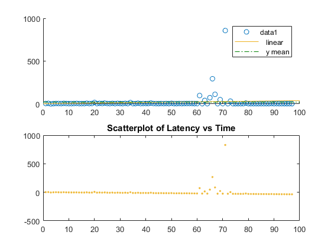
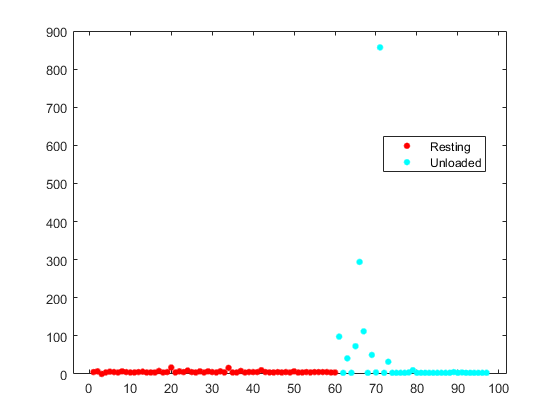
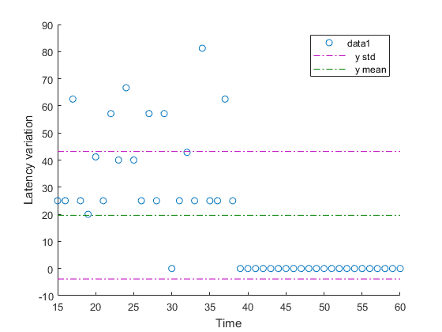

Statistical analisys of the network for the Connect Kit
Copyright 2018 - 2018 Rebel Alliance, srl.
Contents
Abstract
This is a simple statistical analysis of the network performance observed during normal operation. We hope that this file helps detecting the problem. As far as we know about this network configuration, the topology seems preety simple, without secondary (redundant) routes or rings. What we observed (and hope it's explicit from the data) was a complete collapse of the network during the video transmission. Although it may seem plausible a degradation of the performances, a complete and much persistent congestion is not explainable. With this tools we hope to clarify the problem and work out together a solution.
Data
97 packets have been directly collected as a representative sample for the system's performances. They have been grouped in 2 categories, based on the network state
- Ping
- Iperf
- TCP Vanilla connect (todo)
- UDP Vanilla connect (todo)
Although many other measurement methods exist, I used the ping and Iperf tools as the most straightforward and repeatable ones. The data from the study is stored in a Microsoft Excel (R) file. You can simply add or modify the whole raw dataset, with your own measurements.
The columns in the data are as follows:
- ID - Packet ID (time)
- Group - Network state group
- Latency - RTT (ms)
- Transmitted - Quantity of data transmitted (Mb)
- Throughput - Actual Goodput (Mb/s)
We will import the data into a dataset array that affords better data managemment and organization.
% Import data from an Excel file ds = dataset('xlsfile', 'Dati.xlsx') ;
Preliminary analysis
Our primary efficacy endpoint is the latency of the network. We'll plot this and the norm of the residuals from the linear fitting model. We see from the figure that the linear fitting is really good with a bad peak in the "Just Unloaded" section, due to remaining network congestion.
% Use custom scatter plot
RTT_Plot(ds.ID, ds.Latency) ;
 The mean RTT level at baseline is around 20 ms and mean level after Unloading is 76 ms. So, at least for the data pooled across the two loading groups, it seems that the loading causes persistent congestion of the network.
% Use a grouped scatter plot
figure
gscatter(ds.ID, ds.Latency, ds.Group)
 The grouped plot shows that RTT before the start of the VLC video have optimal values. However, the RTT right after unloading expose a big difference between groups. What this plot missed is the RTT during net loading, that's because it was not possible to have a response during video transmission, so no group has been devised.
In this section, we will use percentage change of RTT from the baseline level as the primary metric of congestion.
% Calculate the percentage improvement over baseline level by extracting % the first 37 packet and the last 37 packets (Just Unloaded group), % indices trimming was necessary for dimensions equality. ds.Change_RTT = ( ds.Latency(1:38) - ds.Latency(60:97) ) ./ ds.Latency(1:38) * 100 ;
Warning: Observations with default values added to dataset variable 'Change_RTT'.
In the following graph, we can see that
- In the first half of the plot we have a dramatic increase of the RTT compared to the "Just Unloaded" group,
- The second half has been used as the reference of the change...
Visualize effect of unloading on network decongestion
scatter_change(ds.ID(15:60), ds.Change_RTT(15:60));